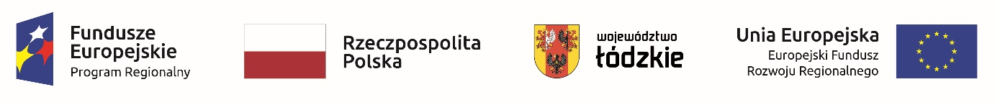

SZKOLNY OŚRODEK KARIERY
Ogłoszenia i aktualności
Szczegóły Opublikowano: 07 październik 2021
Ogłoszenie
Plan postępowań o udzielanie zamówień publicznych w 2022roku
Załącznik w formacie pdf: plan zamówień publicznych 2022 pdf Szczegóły Opublikowano: 07 październik 2021
Ogłoszenie
Z dniem 01.07.2021 roku Centrum Edukacji Zawodowej w Sieradzu rozpoczął realizację projekt nr RPLD.11.03.01-IZ.00-10-001/20 pt. „Mam pomysł na przyszłość” współfinansowany ze środków Europejskiego Funduszu Społecznego w ramach Regionalnego Programu Operacyjnego Województwa Łódzkiego na lata 2014-2020
Od dnia 1 09.2021 zaczął się nabór do projektu. Chętnych prosimy o kontakt z biurem projektu: CEZ Sieradz ul. Leszka Czarnego 2, tel. (43) 822 40 24 cezsieradz@op.pl